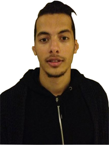

|  | Name: | Ben Wright |
| Birthday: | 01/02/91 | |
| Location: | South Kensington, England | |
| I have been a student at LSBU for the last three years, studying Business and Information Technology. I am originally from Switzerland but was born in the UK as my father moved to the UK to start a new job. The three years I spent at LSBU have been a good experience. Apart from education it has taught me a lot of other things. At present I have different ideas in my head and a different approach to the industry that I would like to progress in. I have also been part of different societies and sport teams while I was at LSBU. I joined the Spanish Society to improve my Spanish and help organise events, which were really fun. I was also part of the basketball team and also took part in karate lessons. My aim is to take part in different IT projects and hope to become a project manager one day. I would like to thank everyone who has helped me to be where I am now. | ||
| Name: | Prian Patel | |
| Birthday: | 13/05/89 | |
| Location: | London, England | |
| I have been a student at LSBU for the last three years, studying Information Technology. My family is originally from India, but I was born after my father had moved here to search for a better life. I have enjoyed my time here at LSBU and learnt many different things from various classmates as well as my lecturers. My favourite lecturer would have to be Professor Johnson because he always explained everything in a way which I could easily understand, but even with that I spent a lot of my time in Perry Library looking for new information on the topics we covered in the lectures. I ate regularly at Mamas Cafe along Waterloo Road not too far from the university to grab a nice breakfast or just grab a quick bite with friends and have a nice chat. I have been a part of a small coding club while at LSBU, which was great as I met many different people and got many ideas about the field I wanted to progress in. I love to code so at the club I got many different ideas on what would be great to create or improve and this helped me whilst undertaking my final year project. I do have strong dislike of bugs as I have had a traumatic experience when I was younger. Finally I consider Tim Berners-Lee as my role model as he has played a significant part in shaping how the World Wide Web works and he is someone I am aspiring to be like. | ||
| Name: | Alexander Sunday | |
| Birthday: | 21/02/92 | |
| Location: | Copenhagen, Denmark | |
| My name is Alexander but friends call me Alex. I have been a student in LSBU for the last two years studying HND Accounting and Business Studies. I was an international student from Denmark who wanted to study in England; after a lot of research and querying, LSBU seemed to be a good option for the environment and courses it had to offer. The two years I have spent at LSBU have been a good experience; I met many people from many various backgrounds. Due to this new involvement and mixing of cultures, I have received invaluable knowledge that has now altered my way of thinking for a different approach in life. I was part of the football team while I was at LSBU, it was great fun. There were a few players that spoke to me in Danish, I was really happy to see this because this meant that I did not miss home as much as I might have. I wish to thank everyone who helped me settle into the University, especially Miss Clarkson who guided me to success, Thank You. | ||
| Name: | Lisa Jackson | |
| Birthday: | 25/11/90 | |
| Location: | Bedfordshire, England | |
| I have been studying for the past 4 years in Computing and graduated in 2012. During my stay at the University I have met lots of teachers with different teaching styles but Mr Kent who has been my teacher for last two years of my course and has to been my favourite teacher. He explains things in a scenario sense then lets you question why you should go left instead of right. The best place to hang out? Well that is a difficult one, I usually go to the K2 Building for a quiet coffee but I live in the Perry Library it is like my second home. My classmates always say that I keep saying "It is not over" even when it actually is, so that would be my favourite quote. I have a part time job at PC World, it was not ideally the experience I needed but it has kept me updated with the latest technologies whilst keeping me financially stable. | ||